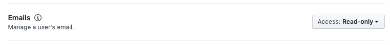
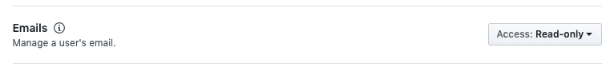

Create GitHub App¶
GitHub application forms the bridge between ReviewNB and GitHub. It enables user authentication via Oauth2 & lets user select repositories that ReviewNB should have access to.
In this section, we’ll create a GitHub app for your self hosted ReviewNB installation. At the end, we require following fields to use inside our ReviewNB installation.
- App ID
- Client ID
- Client secret
- Private Key
Note
Throughout this document when we say GitHub account, it can be an individual/org account on github.com or your own GitHub enterprise installation, depending on which GitHub offering you are using.
Create New App¶
Technically, any GitHub account can own the app but we recommend creating it under org account of the team who is going to maintain the ReviewNB installation. Login to the org account and go to Settings -> GitHub Apps -> New GitHub App as shown below.

Setup URLs and Genral Information¶
Fill in the general information as shown in the screenshot. For URLs, replace reviewnb.<your-domain-name>.com with actual endpoint at which you’ll be hosting ReviewNB application.
{kind=link}
Setup Permissions¶
We need following permissions for enabling all the ReviewNB functionality,
- Read repository contents to fetch notebooks and compute diff
- Read repository metadata to fetch list of commits and PRs
- Read-Write access to pull requests to read & write PR comments
- Read access to emails for user profiles
You need to enable these under permissions section as shown below,
{kind=link}
{kind=link}
 

{kind=link}
Webhook Events & Scope¶
Subscribe to Pull Request events so ReviewNB is notified when a PR is created and it can post the ReviewNB link on the PR discussion. For the questioon, “Where can this GitHub App be installed?” choose “Only on this account” if all your notebook repositories are under this org where you are creating the app, else choose “Any account” so other GitHub orgs and accounts can install this ReviewNB app.
Click on Create GitHub App
{kind=link}
Generate Private Key¶
Once the app is created you can scroll down to the bottom of the app page and click Generate a private key. This will create and download a .pem file for you. Please keep this safe.
{kind=link}
Get App Config¶
At the top of your newly created app you can find App ID, Client ID and Client Secret. Please note down these fields along with the private key generated in the above step.
{kind=link}